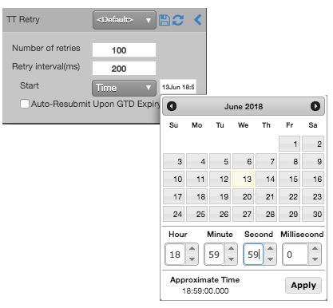

A TT Retry order is a synthetic order that repeatedly submits a child order until it is accepted by the exchange or until it is rejected a specified number of times, based on:
- The time to submit the first child order
- The maximum number of times to send a child order
- The time between retry attempts
A TT Retry order is commonly used to obtain a favorable position in the queue prior to the market open.
For example, the following TT Retry order submits an order 1 second before a 7:00 P.M. market open and continues submitting a new order every 200 milliseconds until the order is accepted or until it is rejected 100 times.

If the exchange accepts the first submitted child order, the child order begins working in the market normally, and the TT Retry parent order terminates. If the first child order is rejected, the TT Retry parent order continues resubmitting a child order at the specified intervals, incrementing the retry counter each time. When the TT Retry parent order finishes, TT sends acknowledgments as follows:
- If a child order is accepted by the exchange before the specified number of retry attempts is reached, a single acknowledgment message containing the number of times the order was rejected and the average latency of each retry is sent by TT (Order Connector), followed by an acknowledgment for the child order. These messages are visible in the TT Audit Trail.
- If none of the child orders are accepted by the exchange before the specified number or retry attempts is reached, a single reject message is sent by TT (Order Connector) that contains the number of times the order was rejected and the average latency of each retry. This message is visible in the TT Audit Trail.
The TT Retry order is managed as follows:
- If exchange accepts the child order, the order works normally.
- Otherwise, the TT Retry order continues resubmitting a child order at the specified intervals, incrementing the retry counter each time. The TT Retry parent order sends acknowledgments as follows:
- If a child order is accepted by the exchange before the specified number of retry attempts is reached, a single reject message containing the number of times the order was rejected is sent, followed by an acknowledgment for the child order.
- If none of the child orders are accepted by the exchange before the specified number or retry attempts is reached, a single reject message is sent that contains the number of times the order was rejected.
TT Retry order parameters
Required parameters:
- {% include Parameters/NumberOfRetries.html %}
- {% include Parameters/RetryInterval.html %}
- {% include Parameters/TimeDate.html %}
- {% include Parameters/AutoResubmit_Details.html %}
- {% include Parameters/StartTime_Details.html %}